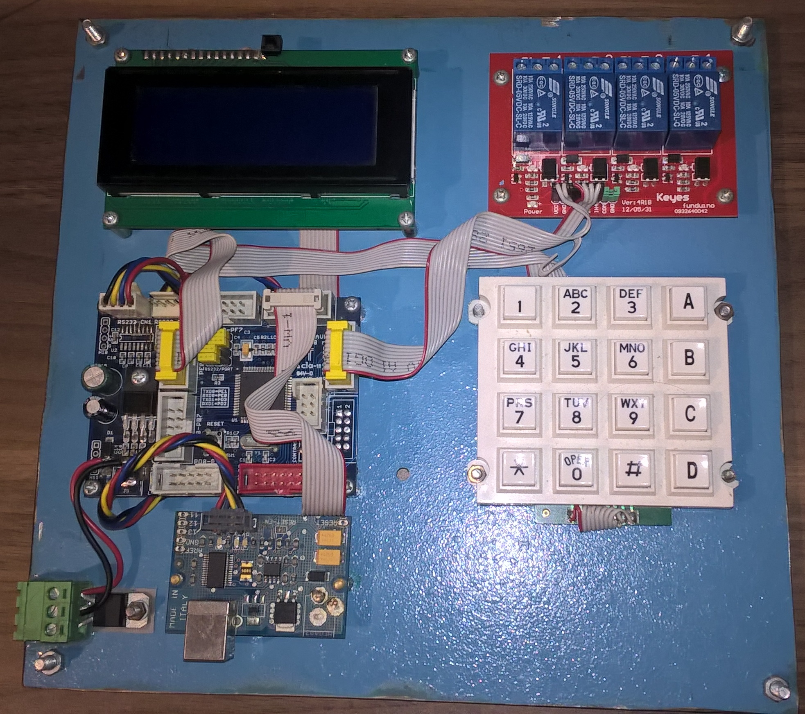
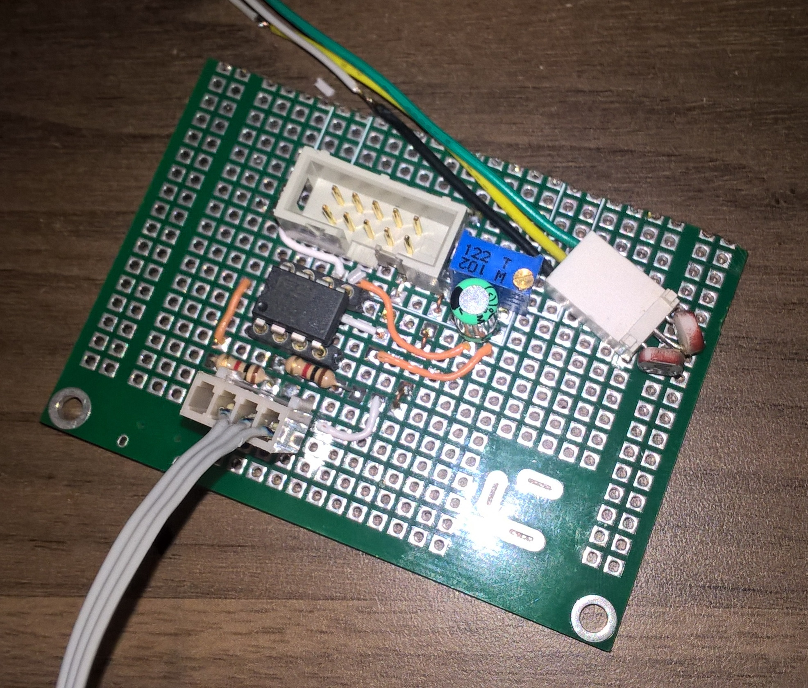
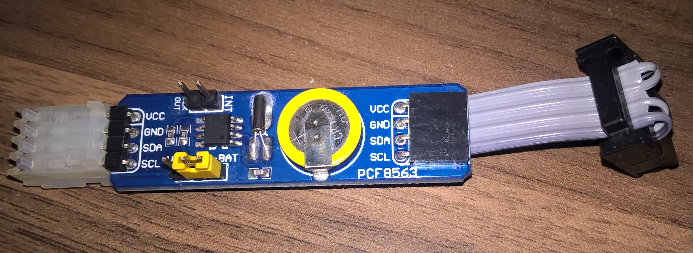
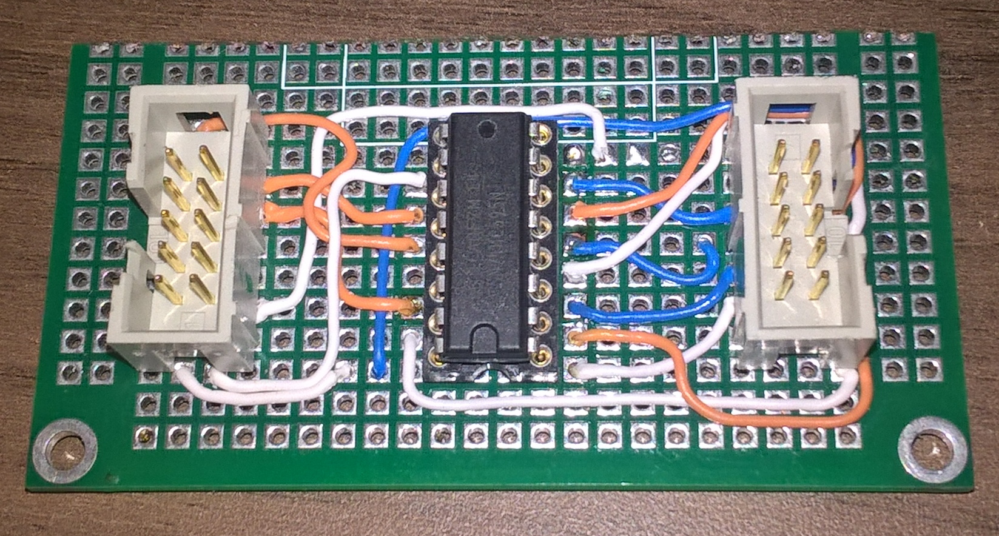
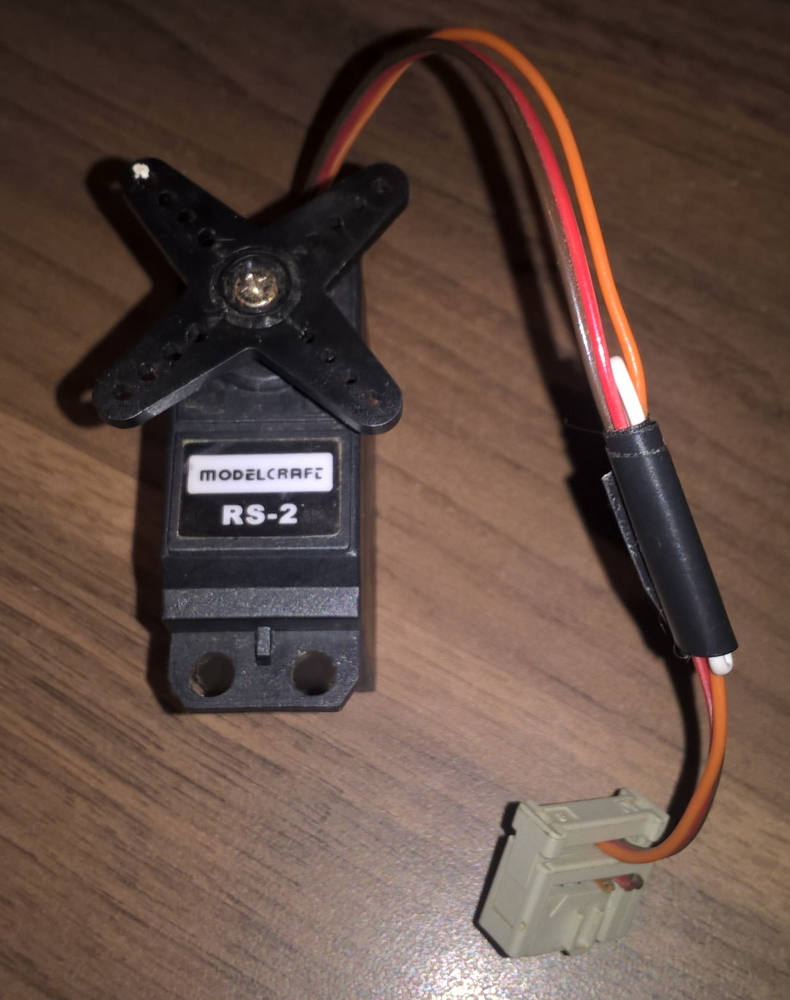

[Resumo]
Os painéis fotovoltaicos é uma tecnologia que transforma energia solar (Luz) em eletricidade DC, a primeira célula fotovoltaica foi criada em 1954 e depois aplicado na industria espacial, a combinação de células em serie e paralelo determina sua diferença de potencial e potencia.
Ao primeiro esta tecnologia foi vista como uma curiosidade e depois como uma possibilidade, após o preço de construção ter diminuído é que começou a entrar no mercado, isto aconteceu a partir dos anos 70, quando se estava a atravessar uma crise energética.
Abaixo esta os tipos conhecidos de possíveis montagens.
Pelo mapa abaixo, podemos determinar os locais mais aptos para aplicar esta tecnologia, Portugal como vemos não é das mais favoravies, também notamos que onde passa a linha de equador é onde podemos tirar maior proveito, ou seja maior $\bf KW/m^2$.
Os painéis fotovoltaicos tem vários parâmetros que determinam sua eficiência, a temperatura de funcionamento, otimização da carga, sua orientação e até limpeza são alguns pormenores, este estado de arte apenas é uma tentativa de melhor garantir tirar maior proveito da energia coletada pelo meio de orientação.
Neste gráfico podemos ver um exemplo da diferença entre o rendimento de sistemas sem controlo de orientação, orientação parcial e total.
Mais energia pode ser coletada ao fim do dia se o Painel fotovoltaico tiver instalado um sistema de orientação solar, através de um atuador mecânico.
Existe dois tipos de sistemas de orientação solar:
Sistema de um eixo, este segue o posicionamento do sol durante o dia de Este a Oeste.
Sistema de dois eixos, o mesmo que de um eixo mais a orientação Norte e Sul que tem em consideração a influencia de inclinação provocada pelas estações do ano.
O projeto em causa pertence a disciplina de Laboratório de Sistemas que da continuidade as disciplinas de Sistemas Digitais, sendo o foco processadores, micro-controladores e Fpga´s (Field programmable arrays). Um Micro-controlador da ATmel é o que vai ser usado como o cérebro do sistema, o tipo de sistema de orientação vai ser de um eixo, um servo motor para simulação de posicionamento e dois sensores LDR (Light dependent resitor) ligados a uma ponte wheatstone e amplificador de instrumentação para ajusto fino. Um RTC (Real Time Clock) como ferramenta de posicionamento principal, disponível um override manual, sendo seus dados visíveis num LCD (Liquid crystal display).
O motor a ser usado se for numa aplicação real seria de corrente continua de preferência com íman permanente , com uma caixa redutora e sem fim para que quando estivesse em estado de paragem poder se desligar sem perder sua posição, já que se sabe que a melhor maneira de poupar energia é não a gastar. Como o objetivo é obter o maior rendimento possível pretende-se não haver desperdício, se houve-se meio de não usar energia para seu posicionamento seria o ideal.
No mundo das energias renováveis só é justificado sua implementação se for em grande escala pois seus rendimentos são baixos e intermitentes, e melhor ainda se os preços forem atrativos, a não ser que haja algum avanço tecnológico de relevo.
O sistema de posicionamento pode aumentar a energia acumulada até 40% durante o ano comparado com os sistemas fixos, durante o dia o painel acompanha a posição dos sol de Este para Oeste e durante a noite regressa a posição Este para o dia seguinte, os sistemas antigos tinham uma bateria para esta operação depois do pôr do sol, os novos modelos já não utilizam bateria mas usam a luz fraca do por do sol para regressar a origem.
Um dos métodos de orientação solar é usar duas células PV em serie com polarização oposta em ângulo de 45o como demonstrado na figura:
Assim o atuador mecânico (motor) recebe o diferencial da corrente fornecida, estando assim sempre orientado a fonte de luz. A corrente no motor é dada pela expressão $I_m = I_1 - I_2 = 2 I_o \; \delta \; \sin (45^o) = \sqrt{2} \; I_o \; \delta \; se \; \delta \; é \; em \; radianos$.
No Projeto não vai ser usado este método mas um análogo utilizando dois sensores LDR também em serie e a 45o um do outro dando uma saída proporcional ao desfasamento da fonte de luz apenas para ajuste fino, já que o posicionamento vai ser sincronizado pelo RTC (relógio), já existe algoritmos criados usando os parâmetros de localização e tempo que nos fornece os dados do local exato da posição do sol, sendo desnecessário a utilização de sensores, aqui este projeto é flexível pois já íntegra um relógio RTC (Real time clock) com calendário de atualização automática.
O equipamento do projeto esta abaixo descrito:
ET-BASE AVR ATmega128
Mainboard com MCU Atmega 128 da ETT.
LDR - Light Controlled Resistor
Dark resistance 1M.
40k at 10 lux.
Max voltage 100V.
Max power 80mW.
INA128PA - Instrumentation Amplifier
Banda de transmissão: 1.3MHz
Montagem: THT
Número de canais: 1
Carcaça: DIP8
Rapidez de subida de tensão: 4V / μ s
Temperatura de trabalho: -40...85°C
Entradas de tensão instável: 0.025mV
Tensão de trabalho: 2.25...18V
LCD 20x4 Blue NHD-0420DZ-NSW-BBW
4x20 Characters HD44780 compatible
Model Craft RS-2 Servo Motor
Control System:
+Pulse Width Control 1500 μ sec
Operating Voltage:
4.8-6.0 Volts
Operating Speed (4.8V):
0.19sec/60° at no load
Stall Torque (4.8V):
42 oz/in (3.0 kg/cm)
PCF8563 RTC Board
Real-time clock/calendar.
Battery on board.
I2C communication.
KEYPAD4X4W
16 Button Keypad switch.
https://www.ptrobotics.com/
https://www.futurlec.com/index.shtml
 
 

O sistema de posicionamento fotovoltaico tem diversas soluções de diferentes Impressas que apostam nas energias renováveis, diferentes métodos na parte mecânica e elétrica, como esta disciplina pertence na área digital, considero importante a manipulação dos datasheets dos componentes e o código, manipular o hardware unicamente por programação através de uma camada de interface [API] acho de maior importância pois cria uma abstração dos problemas que podemos enfrentar e os resolver seguindo uma metodologia sintática, sendo possível o manipular para fazer o que é requerido e desejado. Através do código podemos alterar, modificar e adaptar qualquer projeto ao mundo exterior usando uma linguagem de nível alto ou médio com facilidade.
Dai este projeto pode ser atualizado a qualquer altura acrescentando funcionalidades e dispositivos que possam beneficiar sua performance, caso necessário.
Este projeto esta online no link descrito:
https://github.com/sergio1020881/LABSIS20202021/tree/main/Relatorio_2,
tudo que é necessário para o desenvolver e executar esta ao dispor, O programa usado foi o Atmel Studio 7 basta fazer download, compilar e programar o chip [ATmega128], e depois ligar os periféricos respeitando as ligações.
Apontamento↩︎